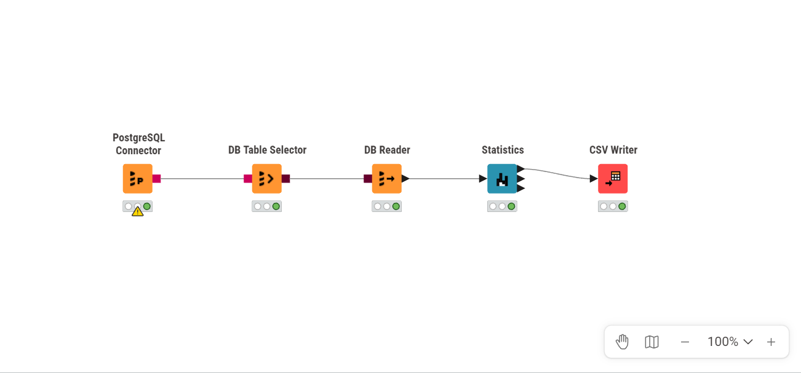

Tugas 2: Migrasi ke PostgreSQL & Analisis Statistik dengan KNIME#
Latar Belakang#
Melanjutkan Tugas 1, data hasil crawling polutan (gresik_pollutant_data.csv) dipindahkan ke database PostgreSQL (di-hosting menggunakan Aiven), kemudian ditarik ke KNIME Analytics Platform untuk dianalisis menggunakan node Statistics.
Alur Kerja#
Data CSV diupload ke PostgreSQL Aiven menggunakan script Python (
migrate_csv_to_postgres.py).KNIME terhubung ke database Aiven menggunakan node
PostgreSQL Connector.Data ditarik menggunakan
DB Table Selector→DB Reader.Node
Statisticsdijalankan pada 6 kolom numerik: CO, NO2, HCHO, O3, SO2, CH4.

Workflow KNIME: PostgreSQL Connector → DB Table Selector → DB Reader → Statistics
Hasil Statistics Node#
row ID |
Column |
Min |
Max |
Mean |
Std. deviation |
Variance |
Skewness |
Kurtosis |
Overall sum |
No. missings |
No. NaNs |
No. +∞s |
No. -∞s |
Median |
Row count |
|---|---|---|---|---|---|---|---|---|---|---|---|---|---|---|---|
longitude |
longitude |
112.6103 |
112.6103 |
112.6103 |
0.0 |
0.0 |
0.0 |
0.0 |
40990.1536 |
0 |
0 |
0 |
0 |
112.6103 |
364 |
latitude |
latitude |
-7.1356 |
-7.1356 |
-7.1356 |
0.0 |
0.0 |
0.0 |
0.0 |
-2597.3477 |
0 |
0 |
0 |
0 |
-7.1356 |
364 |
CO |
CO |
0.0157 |
0.0506 |
0.0309 |
0.0054 |
0.0 |
0.7979 |
1.2062 |
6.4903 |
154 |
0 |
0 |
0 |
0.0298 |
364 |
NO2 |
NO2 |
0.0 |
0.0003 |
0.0001 |
0.0001 |
0.0 |
1.5466 |
1.8385 |
0.018 |
170 |
0 |
0 |
0 |
0.0001 |
364 |
HCHO |
HCHO |
-0.0001 |
0.0006 |
0.0002 |
0.0001 |
0.0 |
0.1592 |
1.1552 |
0.0346 |
173 |
0 |
0 |
0 |
0.0002 |
364 |
O3 |
O3 |
0.1102 |
0.1603 |
0.1178 |
0.0039 |
0.0 |
3.8276 |
39.3445 |
42.8772 |
0 |
0 |
0 |
0 |
0.1175 |
364 |
SO2 |
SO2 |
-0.0007 |
0.0035 |
0.0002 |
0.0005 |
0.0 |
2.7789 |
14.7688 |
0.0388 |
186 |
0 |
0 |
0 |
0.0001 |
364 |
CH4 |
CH4 |
1792.9053 |
1890.1228 |
1862.6584 |
30.1797 |
910.8161 |
-1.4533 |
1.5521 |
24214.5594 |
351 |
0 |
0 |
0 |
1867.2894 |
364 |
Penjelasan Rumus & Contoh Perhitungan Setiap Fitur#
Berikut penjelasan makna, rumus, dan contoh perhitungan manual untuk setiap fitur statistik yang dihasilkan node Statistics di KNIME.
1. Count (Jumlah Data)#
Jumlah total baris data pada kolom tersebut.
2. Missing Values#
Jumlah sel yang datanya kosong/NULL pada kolom tersebut.
3. Minimum & Maximum#
Nilai terkecil dan terbesar dalam kolom.
4. Mean (Rata-rata)#
Contoh: untuk data [12, 15, 14, 18, 13, 100, 16]:
$\(\bar{x} = \frac{12+15+14+18+13+100+16}{7} = \frac{188}{7} \approx 26{,}86\)$
5. Median#
Nilai tengah data yang sudah diurutkan.
Contoh: data terurut 12, 13, 14, 15, 16, 18, 100 (n=7, ganjil) → Median = nilai ke-4 = 15
6. Standard Deviation (Simpangan Baku)#
Contoh: menggunakan data & Mean di atas → \(s \approx 32{,}31\)
7. Variance#
Contoh: \(s^2 \approx 1044{,}15\) (kuadrat dari Std. Deviation)
8. Sum (Overall Sum)#
Contoh: Sum = 188
9. Skewness (Kemencengan)#
Nilai positif → distribusi menceng ke kanan (ekor panjang di kanan, biasanya karena outlier bernilai besar).
Contoh: Skewness ≈ 2,63 (menceng kanan akibat outlier 100)
10. Kurtosis (Keruncingan)#
Nilai jauh di atas 0 → distribusi leptokurtik (ekor tebal, ada outlier ekstrem).
Contoh: Kurtosis ≈ 6,93
Interpretasi#
Kolom mana yang punya Std. Deviation/Skewness/Kurtosis tinggi? Apakah itu mengindikasikan ada hari dengan lonjakan polusi ekstrem?
Bandingkan Mean vs Median tiap kolom — apakah ada perbedaan signifikan yang mengindikasikan outlier?
Kaitkan temuan ini dengan dugaan sumber polutan dari Tugas 1.